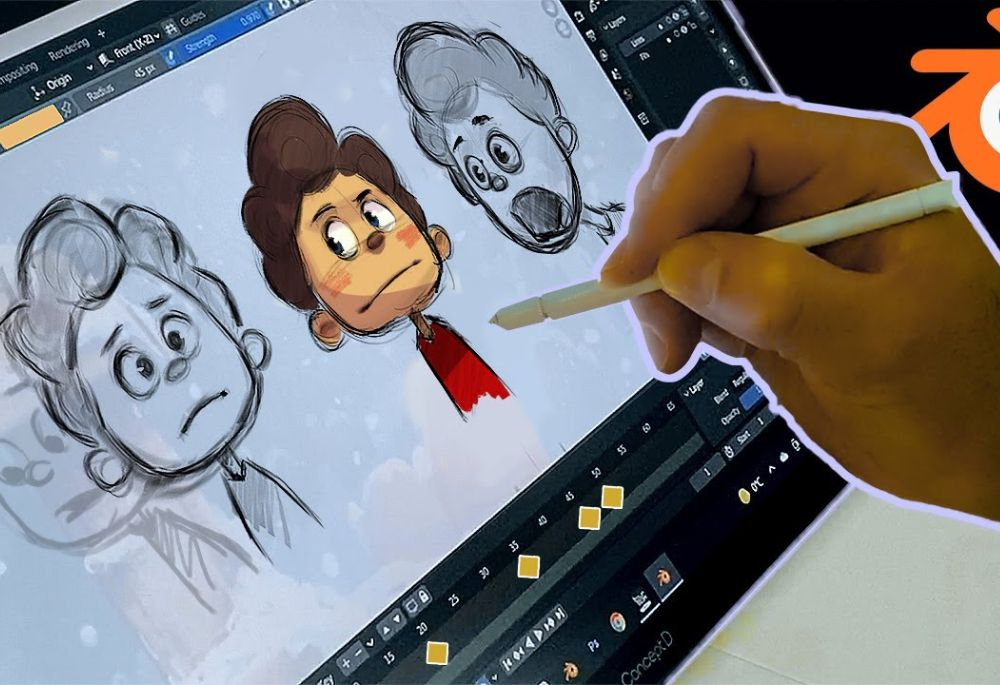

proceso de usar software para crear imágenes en movimiento, simulando la realidad o fantasía mediante secuencias de fotogramas generados por computadora, y se usa para entretenimiento (películas, videojuegos), publicidad (anuncios, motion graphics), educación (tutoriales), y comunicación corporativa (presentaciones), permitiendo crear personajes, entornos y efectos visuales complejos y fotorrealistas de manera eficiente.
El campo de la animación se segmenta en varias técnicas distintivas: la Animación 2D consiste en dibujos planos que se mueven secuencialmente cuadro por cuadro, un método tradicionalmente usado en series como Los Simpson. En contraste, la Animación 3D utiliza modelos tridimensionales en un espacio virtual, lo que permite un mayor realismo, ejemplificado por las películas de Pixar. Una categoría diferente es el Motion Graphics, que se enfoca en la animación de textos, gráficos y formas para crear contenido explicativo y publicitario. Finalmente, el Stop Motion Digital combina la manipulación manual de objetos o figuras reales con la captura digital para dar la ilusión de movimiento.